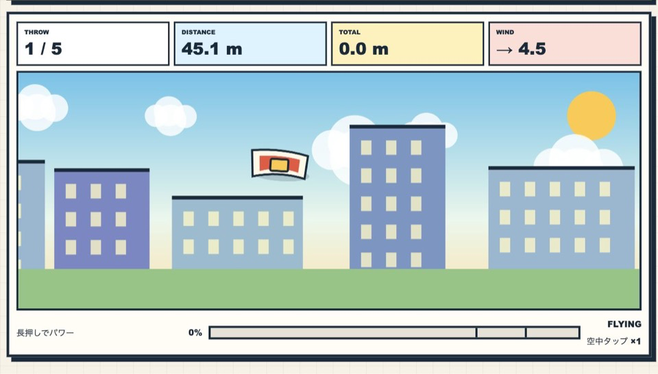

遊び方
- 画面を長押ししてパワーをためます。
- 指やボタンを離すと布団を発射します。
- 飛行中は最大2回タップして、布団をもう一度浮かせられます。
- 赤い物干し付きのベランダへ着地するとボーナスです。
物理アクション / 暇つぶし / 無料ブラウザゲーム
ふとんがふっとんだ！は、屋上から布団を飛ばし、風と空中タップを使って着地距離を競う無料ブラウザゲームです。5回の挑戦で合計飛距離を伸ばす、短時間の一投型物理アクションです。

布団が上昇から下降へ切り替わる頂点付近で空中タップすると、大きく前へ加速する「PERFECT FLAP」になります。上昇中は高さ、下降中は立て直しを重視した効果になるため、風と着地点に合わせて使い分けましょう。
無料 ブラウザゲーム 暇つぶし、物理ゲーム、短時間で遊べる ミニゲームを探している人向けです。失敗してもすぐ次の一投へ進めるため、ベスト距離を更新するまで何度も挑戦できます。
毎回変わる風、ためるパワー、2回だけ使える空中タップによって、同じ発射でも結果が変わります。遠くのベランダへぴたりと着地した時の気持ちよさが魅力です。
はい。インストール不要の無料ブラウザゲームです。
スマホ・PC対応です。スマホでは長押しとタップだけで遊べます。
風向きを確認し、布団が軌道の頂点に近づいた瞬間に空中タップしてPERFECT FLAPを狙ってください。